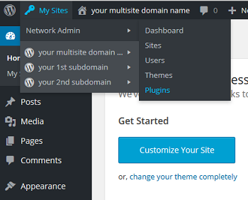

You'll see three plug-ins. The WordPress MU Domain Mapping plug-in should be the third item.


Set Up WordPress Domain Mapping in Apache on a LAMP server - CentOS, Fedora
Difficulty: 1
Time: 5 minutes
The WordPress MU Domain Mapping plug-in allows you to point multiple domains to one WordPress account. This means that you can map any site to another domain, and subdomains to independent standalone domains. In this article, we'll map our subdomains to independent standalone domains. For instance, coolexample.net would redirect to product.coolexample.com, a subdomain of your primary site, coolexample.com.
This article applies to CentOS 6 and 7 and to Fedora 20 and 21.
You should have WordPress multisite installed.
Install unzip, if you haven't already./wp-content/plugins/directory directory. sunrise.php into your WordPress document root.
wp-config file.
/* That's all, stop editing! Happy blogging. */:
Your external domain now redirects to the subdomain you have defined. For example, coolexample.net redirects to product.coolexample.com. This includes the administration pages /wp-admin.
In the next step, we'll map a domain name to each site based on its site ID. There's more than one way to find the ID of a site, but for easier administration, we'll create a simple WordPress Multi-use plug-in that displays an additional ID column on the Sites page.
<?php
add_filter( 'wpmu_blogs_columns', 'do_get_id' );
add_action( 'manage_sites_custom_column', 'do_add_columns', 10, 2 );
add_action( 'manage_blogs_custom_column', 'do_add_columns', 10, 2 );
function do_add_columns( $column_name, $blog_id ) {
if ( 'blog_id' === $column_name )
echo $blog_id;
return $column_name;
}
function do_get_id( $columns ) {
$columns['blog_id'] = 'ID';
return $columns;
}
?> Congratulations! Each site that you've defined with its own domain name can now be accessed that way. You can test it by visiting one of those domains. You'll see the URL redirect to the subdomain of your primary site.
Now each site can be maintained separately through its own WordPress admin panel. Just append /wp-admin/ to the URL, such as coolexampleproduct.com/wp-admin/.